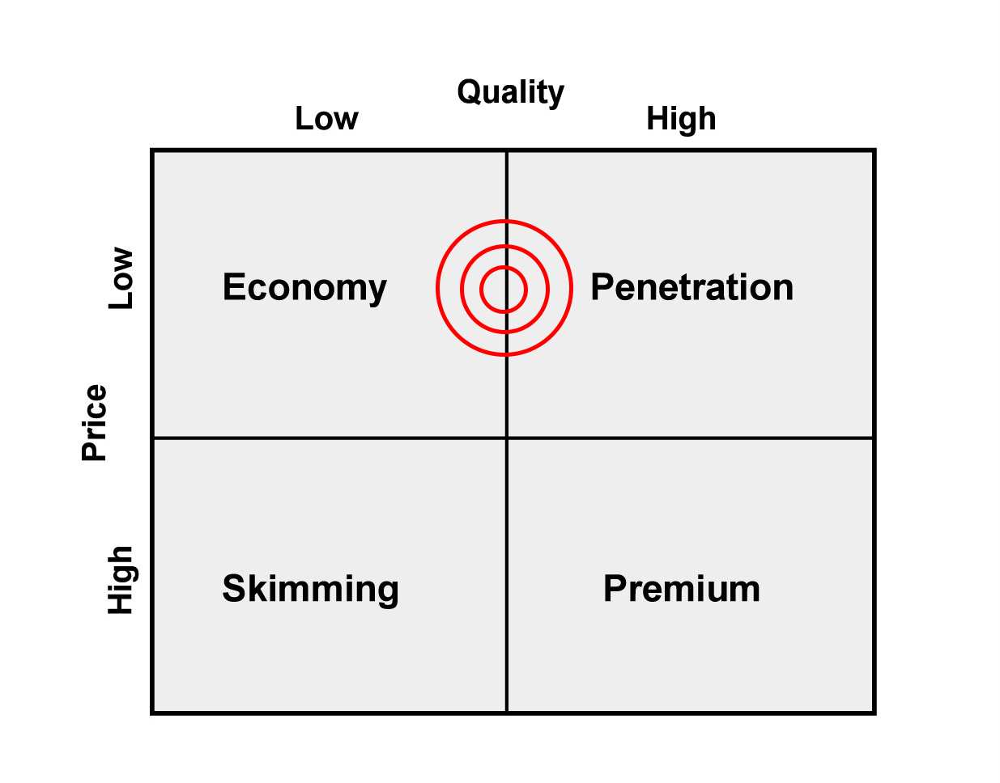
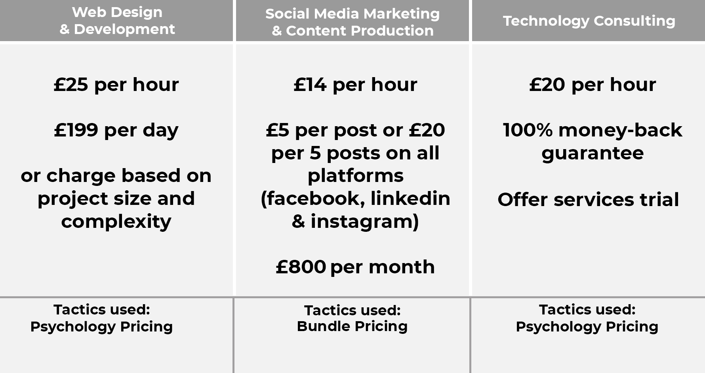
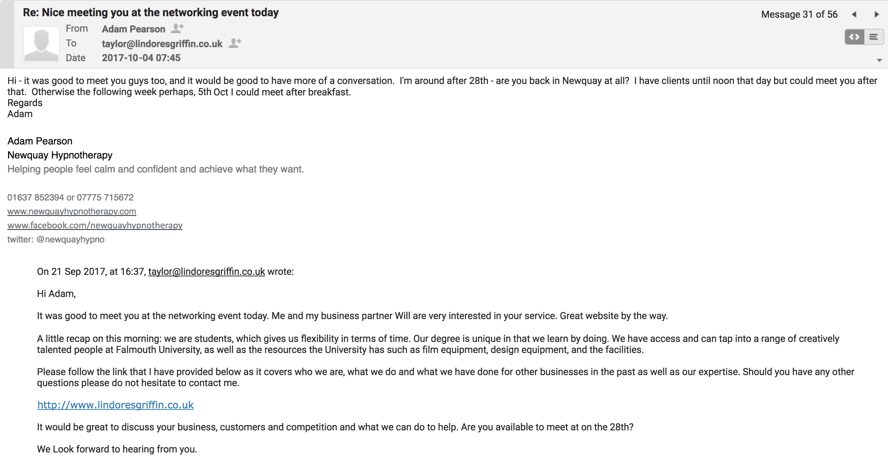
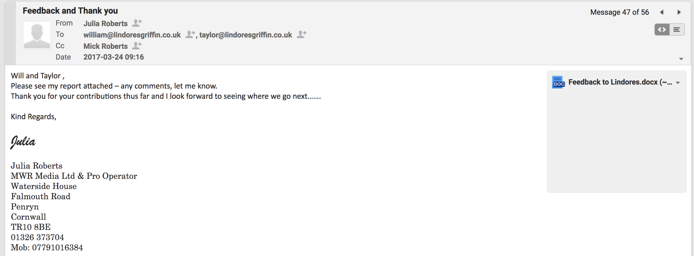

According to Fillis et al (2003), Jones et al (2003) and Hawkins and Prencipe (2000) as cited by Deakins and Freel (2009)1 “Several researchers have found small firms are less likely to use ICT, compared with large firms. These studies show that small-firm owners appear to be less aware of the varieties of technology available to them for business use and less inclined to facilitate the changes necessary within the firm in order to make appropriate use of technology”.
Incorporation
business plan
Bank Account
Target Market
We offer our services to a clearly identifiable target market – longstanding, well-established business owners aged 40yrs+. This can be justified because the senior citizen demographic is on the rise and this changing demographic is likely to create more opportunities for those willing to exploit such opportunities with their services. (Briantracy.com, 2017)2
Top-down pyramid structure criteria used to value a business (Dickinson, 2017)3
Value Proposition
“Integrating your business and technology with simplicity.”
Our value proposition considers our long-term reputation and the specific message we want to get across now (Williams, 2015)4.
Market Share
Between 2010 and 2014 overall digital turnover rose by 153% in Truro, Redruth & Camborne.
The average digital GVA (Gross Value Added) was £39 million between 2013-2015 in Truro & Redruth.
79% of local startups say there is tech sector growth potential.
As above, we established that there is a growing market demand. Therefore, it is highly likely that we could achieve a small market share within a growing sector - digital.
In addition, market research has demonstrated that there is a market need for our services.
Financials
Income statement
for the year ended 31 December 2017
for the year ended 31 December 2017
| £ | |
|---|---|
| Sales Revenue | 800 |
| Cost of sales | (0) |
| Gross Profit | 800 |
| Salaries & Wages | (350) |
| Equipment | (4) |
| Travel | (190) |
| Advertising expenditure | (12) |
| Website costs | (50) |
| Operating profit | 194 |
| Profit for the period | 244 |
Cash Flow Statement
for the year ended 31 December 2017
Cash Flow Forecast
for the period of 01 August 2017 - 31 August 2018
Pricing & Prices
There are two main steps to follow when setting a price:
1. Determine the costs of producing and delivering a product or service.
2. Set a price that is high enough to cover the costs, but low enough to be competitive.
Pricing
Prices
According to Expert Market (2017)7, the costs for a very basic, small first website start at £1000, however, we would quote less than this to increase our chances of acquiring customers.
Management
Taylor Lindores
- Skills:
- Web Developer
- Technology Consultant taylor@lindoresgriffin.co.uk
William Griffin
- Skills:
- Social Media Manager
- Technology Consultant william@lindoresgriffin.co.uk
Project Management
Basecamp
Agile
Business Model Canvas

SWOT Analysis

Awareness
As a New and emerging company we've grown awareness through
networking events and business breakfasts
Referrals
Social Media
Sales
“The quality of the relationship that a firm has with its customers directly influences the intrinsic value of the firm” - (Dorf and Byers, 2005)8
We give our clients trial periods, ask for feedback and build relationships by reciprocating value
Feedback adds value to our business and so we encourage our customers to provide feedback (Hendry, 2017)9
We've also gone physically to business premises to pitch our services and share our business cards
“New businesses encounter sales resistance due to competition and lack of knowledge of their product and its quality. One method to overcome this is to utilize trial periods.” - (Dorf and Byers, 2005)10
Our main objective is to get new customers, encourage trial periods and monitor customer evaluation
Our prices are competitive because we are targeting only a small percentage of the market share
A low price will increase our chance of success and encourage trial or repeat purchase
Reputation
lindoresgriffin.co.uk
I would argue that our clean, modern looking site design gives our customers and potential customers an overall impression and presents professionalism and credibility and that boosts our reputation. It is also a source of lead generation as it attracts those who are actively seeking the services we offer. According to Williams (2015)13 “setting up a web site is a key step in starting a new business, and an effective web presence can be a vital marketing tool”
emails
Valuing Lindores & Griffin
There are two widely used ways of valuing a business: market value of assets or multiple of profits which is more appropriate for our business as we have:
- Minimal tangible assets
- High-risk due to not having a track record i.e. forecast profits only
- Managers (us) without a great deal of experience
- a business dependent on our skills
Taking all of the above factors into consideration tends to command a lower multiple than established firms.
After paying ourselves a salary, I have forecasted a closing balance of £8,612 by August 2018
Forecasted earnings (p/a) after tax × Multiple = Value
£8,612p/a × 2 = £17,224
Critical Evalution
Bringing it all together for a final valuation
- Small market share with high demand - potential for growth
- Valuable skillsets - lifetime value
- Software and tangible assets - £50
- Website - £400
- Key partners and customer goodwill - £500
- Systems in place - £100
- Intellectual property - £500
- Financial valuation - £17,224
£20,000
Thank you!
- Deakins, D. and Freel, M. (2009). Entrepreneurship and small firms. London: McGraw-Hill, p.156.
- Briantracy.com. (2017). 7 Ways to Get Rich Through Excellent Customer Service. [online] Available at: https://www.briantracy.com/blog/business-success/7-ways-to-add-value-to-your-business-customer-service-successful-people/ [Accessed 15 Dec. 2017].
- Dickinson, M. and Burrows, P. (2017). Valuing a Business, Falmouth University Launchpad.
- Williams, S. (2015). The Financial Times Guide to Business Start Up 2016. Harlow, United Kingdom: Pearson Education Limited, pp.155-157.
- Techcityuk.com. (2017). [online] Available at: http://www.techcityuk.com/wp-content/uploads/2016/02/Tech-Nation-2016_FINAL-ONLINE-1.pdf?utm_content=buffer2e58f&utm_medium=social&utm_source=twitter.com&utm_campaign=buffer [Accessed 08 Nov. 2017].
- Sthelenschamber.com. (2017). [online] Available at: https://www.sthelenschamber.com/assets/0002/1891/A_Guide_to_Costing_and_Pricing_a_Product_or_Service.pdf [Accessed 4 Dec. 2017].
- Your Bibliography: Web Design | Expert Market. (2017). How Much Does a Website Cost in 2018?. [online] Available at: https://webdesign.expertmarket.co.uk/how-much-does-website-cost [Accessed 6 Dec. 2017].
- Dorf, R. and Byers, T. (2005). Technology ventures. Boston: McGraw-Hill.
- Hendry, C. (2017). Human Resources, Employment and Recruitment Workshop.
- Dorf, R. and Byers, T. (2005). Technology ventures. Boston: McGraw-Hill.
- Burns, P. (2016). Entrepreneurship and small business. Basingstoke (GB): Palgrave Macmillan education.
- Dorf, R. and Byers, T. (2005). Technology ventures. Boston: McGraw-Hill.
- Williams, S. (2015). The Financial Times Guide to Business Start Up 2016. Harlow, United Kingdom: Pearson Education Limited, pp.155-157.
- Burns, P. (2016). Entrepreneurship and small business. Basingstoke (GB): Palgrave Macmillan education.